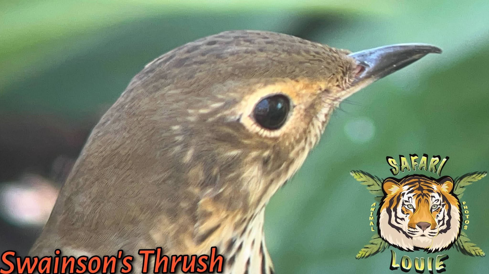

Birders
Ohio native birds · field notes

For all my fellow birders, you're in luck — I've got some Ohio native birds that I've taken this month and added to my animal collection!
Twelve photos in the post, all Ohio natives from this month's shooting. The first of them is this Swainson's Thrush, up close, with my Safari Louie mark on the shot, as always.
Louie posted this on Facebook — see all 12 photos there →